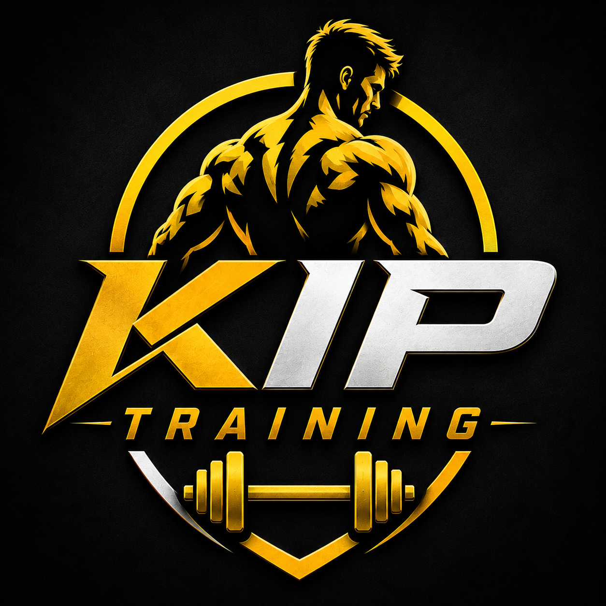

PROGRAMUL TĂU
Full Body
Începi cu 10 minute pe bandă, apoi urmezi exercițiile în ordinea stabilită.
Antrenamente0
Ultimul volum0 kg
Vizite la sală0
Timp total0 min
Calendar
Istoric
TIMP ANTRENAMENT00:00
0/9 exerciții terminate

ASISTENT DE ANTRENAMENTProgram Full Body · aparate cu selector de greutate
Începi cu 10 minute pe bandă, apoi urmezi exercițiile în ordinea stabilită.